2.6: The Brain
The brain is the most complex part of the human body, consisting of 86 billion neurons, each of which may connect with 1000s of other neurons. It is the center of higher-order processes like planning, memory, problem solving, and consciousness, and coordinates voluntary and involuntary movements and bodily functions. This section provides an introductory overview of the brain and some basic neuroanatomy.
The mammalian brain can be subdivided in many ways, resulting in some inconsistent and ambiguous naming conventions over the history of neuroanatomy (Swanson, 2000). One way to think about brain organization reflects brain development in the embryo. The human nervous system starts as a simple neural tube, and 3-4 weeks after conception, the tube expands into three primary vesicles—the forebrain, midbrain, and hindbrain. After a few more weeks, these primary vesicles give rise to secondary vesicles that eventually develop into the components of the adult nervous system (more detail on brain development in Chapter 7). As seen in Figure 9, the forebrain vesicle develops into a) the cerebrum, which includes the cerebral cortex (frontal, temporal, parietal, and occipital lobes) and underlying subcortical structures (e.g., the hippocampus, amygdala, and basal ganglia), and b) the diencephalon, which includes the thalamus and hypothalamus. The midbrain primary vesicle develops into part of the brainstem, including the superior and inferior colliculi. The hindbrain develops into the cerebellum and other brainstem regions including the pons and medulla oblongata. We introduce these brain structures in the section below.
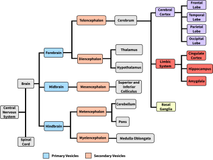
Cerebral Cortex
The cerebral cortex is a thin sheet of neurons that makes up the outermost layer of the cerebral hemispheres. The term cortex, derived from the Latin for “bark,” refers to a thin sheet of neurons; in contrast, the term nucleus (plural: nuclei) in neuroanatomy refers to a cluster of neurons. The cerebral cortex is made up of gray matter, a type of tissue named for its color that consists largely of neuronal cell bodies and short-range connections. Conversely, white matter tissue consists largely of axons covered in myelin, a fatty white substance that insulates axons to speed the transmission of neural signals. White-matter fiber tracts underlie the gray matter of the cerebral cortex and send signals to more distant brain regions (Figure 10).
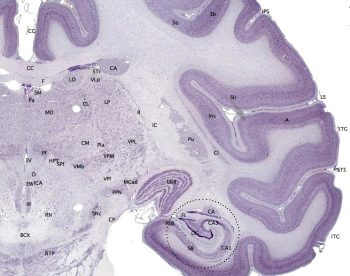
The cerebral cortex ‘bark’ is only 2-4 mm across, but most cortex consists of 6 layers. Each layer has characteristic cell types and connectivity—the innermost layers 5 and 6 send signals out of cortex, layer 4 receives input from the thalamus, layers 2 and 3 project to nearby regions within cortex, and layer 1 has very few cell bodies and mostly contains the tips of dendrites and axons (Hall, 2023).
The thin cortex has a surprisingly large surface area—the human cortex is about 1800 cm2, making the cortex in each hemisphere about the size of medium thin-crust pizza (minus the sauce, cheese, and toppings) (Van Essen et al., 2018) (Figure 11). This large surface area fits into the small volume of the cranium, because the human cortex is extensively folded (most other animals including small mammals have a smooth cortex). Folding maximizes the surface-to-volume ratio, and improves packaging and communication efficiency (Shipp, 2007).
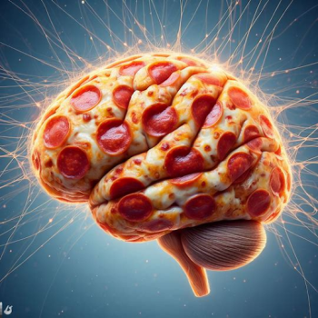
The folding of the cortex also gives the brain its bumpy appearance. The bumps are called gyri (singular: gyrus) and the valleys between gyri are called sulci (singular: sulcus). Larger and deeper sulci are called fissures. Major gyri, sulci, and fissures are used as landmarks to separate the cortex into its major regions, including the frontal, temporal, parietal, and occipital lobes (Figure 12). The central sulcus marks the border between the frontal and parietal lobes. The lateral sulcus (also called the Sylvian fissure), separates the temporal lobe from the frontal and parietal lobes. The occipital lobe has no obvious anatomical border on the outer surface of the brain. However, from the medial (inner) surface, an obvious landmark, the parieto-occipital sulcus, separates the parietal and occipital lobes.
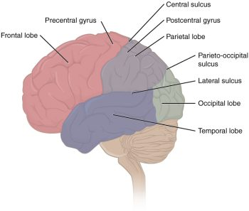
Another prominent landmark, the longitudinal fissure, runs down the brain’s midline and separates the left and right cerebral hemispheres. The two cerebral hemispheres are connected to each other via the corpus callosum, a large white matter tract that passes information between hemispheres. The left and right hemispheres are structurally symmetrical and often have overlapping and redundant functions, but there is some lateralization of function, where some brain functions are processed more in one hemisphere than the other. For example, touch signals and motor commands for each side of the body are processed in the contralateral (opposite) side of the brain, and language for most people is processed more in the left hemisphere.
Finally, smaller subregions of the cerebral cortex are associated with particular functions, a concept known as localization of function. In the early 1900s, a German neuroscientist named Korbinian Brodmann extensively studied the microscopic anatomy, or cytoarchitecture, of the cerebral cortex and divided the cortex into 52 separate regions based on the microscopic tissue structure. These “Brodmann areas” are still used today to describe anatomical regions within the cortex (Figure 13). Brodmann’s anatomical maps align well with the particular functions within the cortex. For example, Brodmann area 4 (as defined based on the microscopic tissue structure) aligns with the primary motor cortex that sends motor commands to the spinal cord.[1]
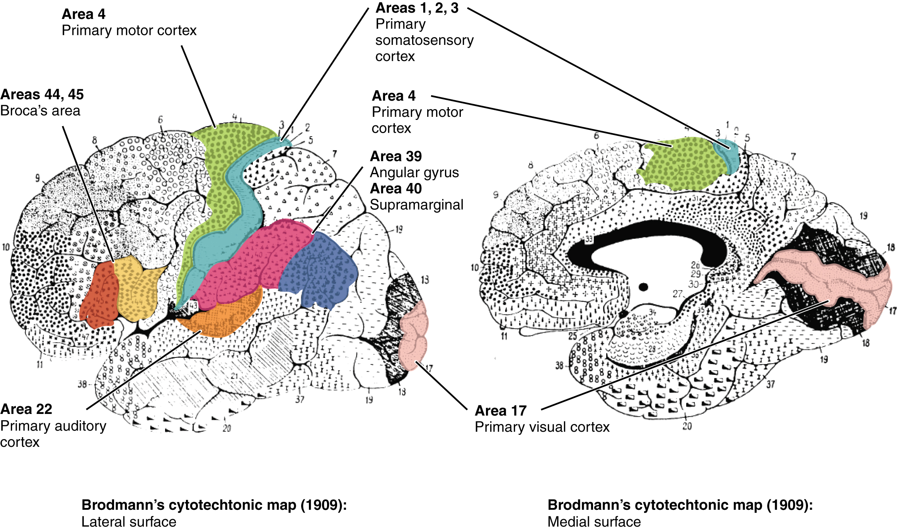
Frontal Lobe
The frontal lobe, located in the front of the brain (where else?), is involved in planning and implementing movement, as well as higher-order cognitive processes such as attention, language, reasoning, problem solving, and abstract thought. The frontal lobe is made up of subregions that perform specialized functions. At the back of the frontal lobe is the precentral gyrus (the gyrus or bump directly pre- or anterior to the central sulcus); this region is the primary motor cortex, which contains neurons that send commands to the spinal cord to move skeletal muscles. Areas within the primary motor cortex map to different muscle groups in an ordered manner (Figure 14). Body parts that require especially fine motor control, like the fingers, lips, and tongue, occupy more “neural real estate” on the motor cortex than, say, the shoulder or trunk. Anterior to the primary motor cortex are other areas associated with movement, including the premotor area (involved in movement planning) and the frontal eye fields (involved in eliciting eye movements and visual attention).
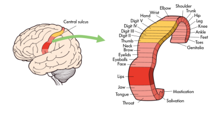
Anterior to the motor and premotor cortex is the prefrontal cortex (PFC), which is involved in many cognitive and executive functions (Figure 15). In the inferior prefrontal cortex (usually left lateralized) lies Broca’s area (Figure 16), a region involved in language production. Broca’s area is named after a French physician, Paul Broca, who in 1861, documented that damage here impaired speech production. Other major subregions of the prefrontal cortex include the dorsolateral PFC (dorsal=upper, lateral=outer) involved in working memory, planning, inhibiting responses, and cognitive flexibility, and the orbitofrontal cortex at the very front (by the orbits of the eye), which is involved in complex decision making, encoding value, emotion, sociality, and predicting the consequences of our actions (Rudebeck & Rich, 2018).
In general, more anterior regions in the brain and within the frontal lobe are roughly associated with ‘higher’ cognitive function, such as rule learning at higher levels of abstraction. High-level abstract thought, executive function (such as maintaining goal-directed behavior), language, and navigating complex social contexts are crucial for what we consider “human” cognition. Indeed, the corresponding prefrontal regions are disproportionately large in humans and have expanded or reorganized in humans compared to other species, especially compared to species more distant on the evolutionary tree (Van Essen et al., 2018)
Humans with frontal lobe damage can have a variety of impairments depending on the location and extent of the damage. These impairments include changes in personality, cognition, learning, decision making, risk assessment, behavioral inhibition, and social function.[2]
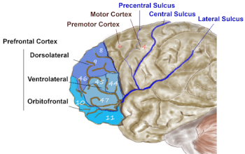
Temporal Lobe
The temporal lobe is located in the lateral portion of each hemisphere under the temples (hence “temporal”). It is involved in processing auditory information, understanding language, recognizing visual objects, and memory. The auditory cortex, which processes auditory information, is located in the superior temporal lobe. In the posterior part of the superior temporal lobe lies Wernicke’s area, a region involved in language comprehension. Wernicke’s area connects to the frontal Broca’s area (involved in language production) through a white-matter fiber tract called the arcuate fasciculus, (Figure 16).
In addition to processing sound and language, the temporal lobe is critical for visual object recognition and memory. The ventral (bottom) surface of the temporal lobe receives visual signals from the visual cortex. It contains subregions specialized to perceive and recognize faces (the fusiform face area) and places and scenes (the parahippocampal place area). Damage to these regions, from a stroke for example, can impair specific abilities; inferior temporal lobe lesions may lead to prosopagnosia, the inability to recognize and identify faces (Kanwisher & Yovel, 2008). Finally, the medial temporal lobes are important for encoding long-term memory.[3]
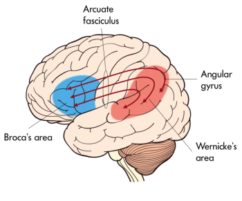
Parietal Lobe
The parietal lobe, located above the temporal lobe and behind the frontal lobe, processes touch, bodily and spatial maps, and integrates senses. The postcentral gyrus (directly behind the central sulcus) houses the primary somatosensory cortex (S1). This region processes the tactile senses, including touch, pressure, pain, itch, and vibration, as well as more general bodily senses of proprioception (body position) and kinesthesia (movement sense). The somatosensory cortex is organized topographically: adjacent skin areas are represented by adjacent cortical regions. Sensitive body parts have more nerve receptors on the skin and occupy larger cortical areas than less sensitive parts. For example as seen in Figure 17, the highly sensitive fingers and lips occupy much more somatosensory cortex than the leg and trunk.
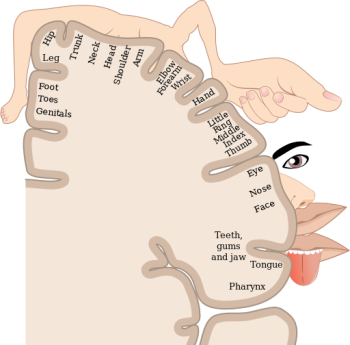
While the anterior parietal cortex processes body senses, the posterior parietal cortex is an “associative” region, meaning it is neither strictly sensory nor motor. Rather it integrates inputs from touch, proprioception, vision, audition, as well as from motor and prefrontal regions (Whitlock, 2017). This integration is crucial for making spatial maps that guide attention and movement. In order to grasp an object, that object’s location must be translated from its retinotopic coordinates (i.e., where it lands on the retina) into coordinates in space; this translation depends on the direction the eyes and head are pointed. Parietal maps of the locations of body parts and objects in space are critical for planning and executing movements to manipulate objects. These spatial maps output to frontal motor regions for planning body movement and to the frontal eye fields for directing eye movements and attention.
Damage to the posterior parietal lobe can impair visually guided reaching movements and spatial perception (Karnath, 1997). In light of its role in attention and awareness, damage here can also lead to a condition called hemispatial neglect, wherein a patient loses awareness of one side of space. For example, a stroke in the right posterior parietal lobe can lead to the inability to perceive the left visual field, causing the patient to act as if the left side of space doesn’t exist (they might ignore food on the left side of their plate, or when asked to copy a picture, they might only draw the right half). Ultimately, the parietal lobe is critical for processing and integrating sensory information and transmitting this information to brain areas that control attention and movement.[4]
Occipital Lobe
The occipital lobe, located at the back of the brain, contains the visual cortex that processes visual information. Visual input from the eyes travels along the optic nerves to the lateral geniculate nucleus (LGN) in the thalamus, and continues to the visual cortex. Visual input enters the cortex at the most posterior portion of the occipital lobe—the primary visual cortex (V1). V1 (and other regions in the visual system) is organized retinotopically, meaning that adjacent regions of the retina (and visual field) are represented by adjacent parts of visual cortex. From V1, visual signals are sent to different brain regions (in the visual cortex and beyond) that specialize in processing different image features such as color, edges, orientation, texture, and movement. Visual regions are highly interconnected and recurrent, sending feedforward signals “up” the processing hierarchy, as well as feedback signals “back down” the processing chain (Van Essen et al., 1992). There are two main visual processing pathways—the lower ventral or “what” pathway proceeds to the inferior temporal lobe for object recognition, and the upper dorsal or “where” pathway proceeds to parietal regions for mapping object location, especially for eye or hand movements.[5]
Insula
The insula is part of the cerebral cortex tucked deep into the lateral sulcus. It lies underneath parts of the frontal, temporal, and parietal lobes (Figure 18). It is sometimes called the insular lobe, a fifth lobe of the cerebral cortex, but it remains less understood than the four cortical lobes visible on the brain’s surface. The insula has been implicated in a dizzying array of functions, including sensory processing (e.g., taste and interoceptive processing of bodily states like hunger, pain, and arousal), representing emotions, motor control, self-awareness, empathy, risk prediction, cognitive functioning, consciousness, etc. (Gogolla, 2017). The insula’s diverse functions and extensive connectivity to other brain regions highlight its role as a hub linking large-scale brain systems. The insula is thought to be involved in many psychological and neurological conditions including anxiety and depressive disorders, emotion dysregulation, autism spectrum disorders, and addiction. While the insula is considered one of the least understood cortical structures, a surge of recent research interest is making headway (Gogolla, 2017; Kortz & Lillehei, 2023).
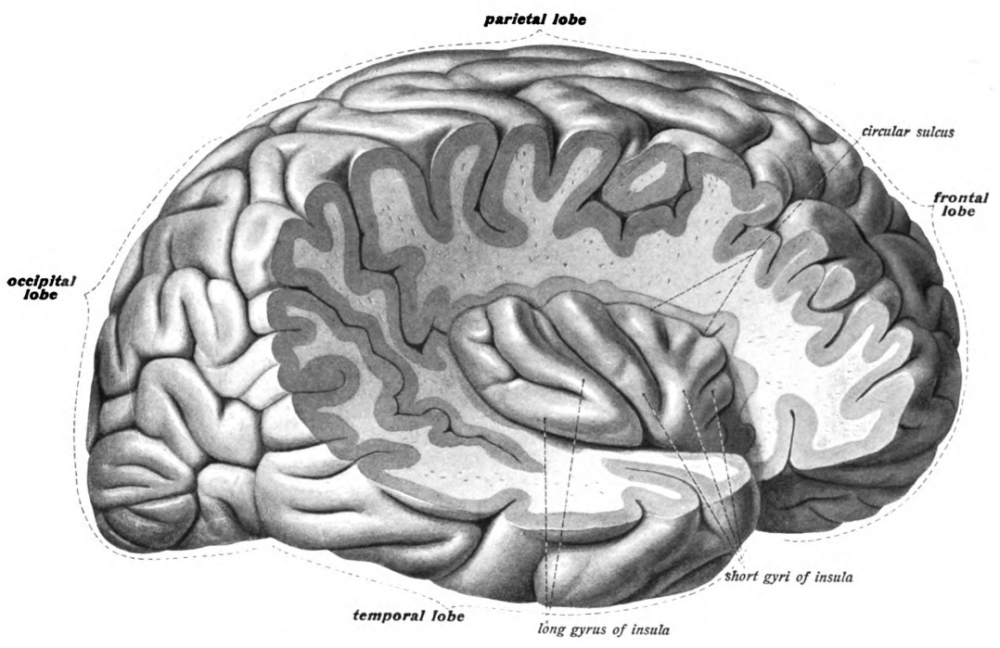
Limbic System
The limbic system is a collection of highly specialized neural structures, both subcortical and cortical, that sit at the top of the brainstem (Figure 19). The limbic system was originally defined by Paul Broca (1880) as a series of structures near the border between the brainstem and the cerebral hemispheres (“limbus” is Latin for border). The limbic system is involved in many functions including memory, emotion, behavior, motivation, and olfaction. Given advances in neuroscience, the definition of which structures are included in the limbic system has gone through many iterations (Torrico & Abdijadid, 2019). Major components of the limbic system include the hippocampus, the amygdala, and the cingulate cortex.
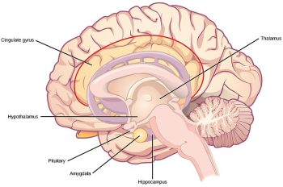
Hippocampus. The hippocampus is a seahorse-shaped structure involved in memory, learning, and spatial processing (Figures 19 and 20). The hippocampus is richly connected to many cortical and subcortical regions. During learning, the connection strengths of hippocampal neurons change, and those changes are important for particular aspects of memory, particularly the ability to remember more of an event or stimulus when exposed to only part of it (pattern completion), and to remember events or stimuli as distinct from each other (pattern separation). Damage to the hippocampus produces memory deficits. Hippocampus damage occurs early in Alzheimer’s disease, and extensive damage can lead to anterograde amnesia (the inability to form new memories). The hippocampus is also important for spatial navigation. As discovered in rats and mice, many neurons in the hippocampus respond as “place cells,” meaning that they fire bursts of action potentials when the animal passes through a specific place in its environment.
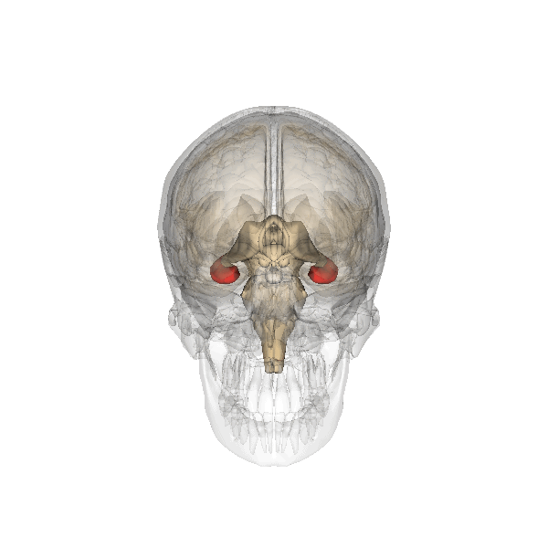
Amygdala. The amygdala, named for its almond shape, lies next to the hippocampus beneath the cerebral cortex (Figure 19). It processes emotions, generating responses like fear, anxiety, and aggression, and facilitates emotional learning such as fear conditioning.
The amygdala receives input from sensory and prefrontal cortex, hippocampus, and brainstem, allowing it to integrate situational, contextual, memory, and bodily information. The amygdala sends output signals to regions throughout the brain, including the frontal lobes, hippocampus, basal ganglia, thalamus, and hypothalamus. This connectivity allows it to produce emotional responses appropriate to a given situation. For example, a punishment-associated stimulus can trigger a fear response by altering hormone release via the hypothalamus, triggering freezing behaviors, and activating the sympathetic nervous system via the brainstem. Amygdala damage can lead to reduced emotional behavior (“flat affect”) and impaired learning about emotional or frightening stimuli.[6]
Basal Ganglia
The basal ganglia (Figure 21) are a group of subcortical nuclei (i.e., clusters of cell bodies that lie below the cerebral cortex) that are critical for regulating and selecting voluntary movement. In particular, the basal ganglia are traditionally defined as the caudate nucleus, putamen, and globus pallidus, but are known to rely on engagement with related nuclei, such as the subthalamic nucleus and substantia nigra, to initiate voluntary movement (Lanciego et al., 2012).
Information flows from widespread areas of the cerebral cortex, through the basal ganglia and thalamus, and back to the cerebral cortex.
These cortico-basal ganglia-thalamo-cortical loops are crucial for selecting motor actions, initiating and stopping behaviors, and aspects of motivated behavior, including action selection based on potential outcomes. The loops include excitatory and inhibitory pathways, the balance of which is important for initiating or inhibiting motor outputs. Disruptions to this circuitry can cause an imbalance between these excitatory and inhibitory effects, as is seen in a number of neurological conditions including Parkinson’s disease and Huntington’s disease, as well as schizophrenia, Tourette’s syndrome, obsessive-compulsive disorder, and addiction.[7]
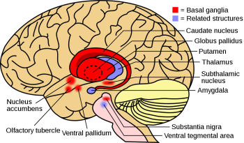
Thalamus
The thalamus is an information hub that relays information from and to widespread brain areas (Figure 22A). Nerve fibers project from the thalamus to the cerebral cortex in all directions, allowing it to act as an information hub. The thalamus is organized into specialized regions or nuclei that process specific modalities. All sensory systems, except smell, have a thalamic nucleus that receives sensory signals and sends them to their primary cortical areas. For example, the lateral geniculate nucleus of the thalamus receives visual information from the eye via the optic nerve and sends projections to primary visual cortex (Figure 22B); the medial geniculate nucleus receives auditory information from the ear via the inferior colliculus and projects to auditory cortex. Thalamic nuclei don’t just relay information “upward” (to cortex), they also receive “descending” input from cortex, forming circuits termed thalamo-cortical loops.
Thalamocortical loops are not limited to sensory processing, but also play important roles in memory, attention, motor control, and decision making. These loops demonstrate that the ‘input-computation-output’ function of the nervous system is not simply in one direction. Instead, outputs from a given region often feed back to structures that provide inputs to that region, as well as sending outputs to ‘upstream’ brain areas. Finally, because of its role as informational/sensory hub, the thalamus plays a role in transitioning between sleep and wakefulness, as well as modulating alertness and attention (Portas et al., 1998).[8]
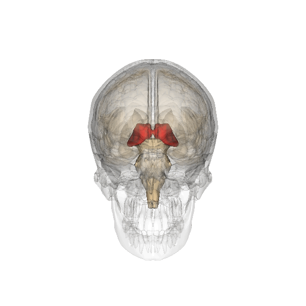
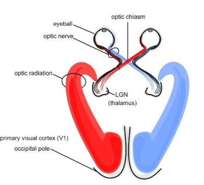
Hypothalamus
The hypothalamus is located below the thalamus (hence its name) and is primarily responsible for regulating endocrine hormones in conjunction with the pituitary gland that extends from the hypothalamus (Figure 17). Endocrine hormones are important for controlling mood, development, growth, and reproduction. Given its central location in the brain, the hypothalamus connects to the brainstem, cerebral cortex, hippocampus, amygdala, and thalamus (Bear et al., 2018). As a result, the hypothalamus, both by trafficking sensory and motor information and secreting endocrine hormones across different brain regions, is well-positioned to regulate drives and motivations.
Cerebellum
The cerebellum (Latin for “little brain”) is the distinctive structure at the back of the brain (Beck & Tapia, 2023). In Figure 23, you can see the cerebellar white matter (arbor vitae) and the cerebellum’s tightly folded surface. The cerebellum is critical for coordinated movement and posture. It does not initiate motor commands, but contributes to movement precision, timing, and fine-tuning (based on sensory feedback), as well as motor learning. In addition to the cerebellum’s role in motor control, neuroimaging studies have implicated it in many cognitive functions, including language and attention. The cerebellum’s influence beyond movement aligns with its anatomy: it contains ~80% of the brain’s neurons (most of its neurons are tiny and densely packed granule cells, van Essen et al., 2018) and largely maps to cerebral brain networks involved in cognition (Buckner, 2013).[9]
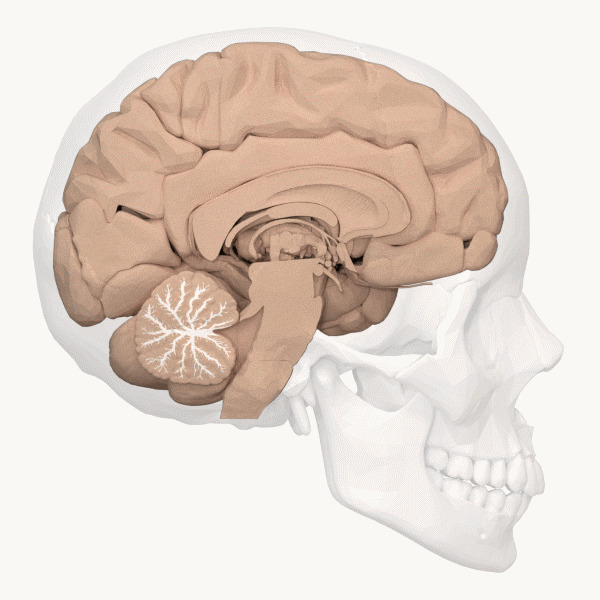
Brainstem
The brainstem (or brain stem) is sometimes referred to as the “trunk” of the brain (Beck & Tapia, 2023). It contains many white matter tracts carrying information to and from the spinal cord, cranial nerves, and the rest of the brain. The brainstem is responsible for many neural functions that keep us alive, including regulating breathing, heart rate, and digestion. In keeping with its function, if a patient sustains severe damage to the brainstem they will often require life-support machines to keep them alive. The brainstem can be divided into multiple sections in descending order: midbrain, pons, and medulla oblongata (Figure 24). At the top of the brainstem is the midbrain, which houses dopamine-producing cells, regulates movement, and includes the superior and inferior colliculi, which process and relay visual and auditory information, respectively. Below the midbrain lies the pons which processes and relays sensory and motor information. By employing the cranial nerves, the pons serves as a bridge that connects the cerebral cortex with the medulla and exchanges information between the brain and the spinal cord. The lowest portion of the brainstem, the medulla oblongata, processes breathing, digestion, heart and blood vessel function, swallowing, and sneezing. Collectively, these regions are involved in body regulation, the sleep–wake cycle, and sensory and motor function.[10]
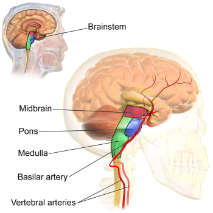
Media Attributions
- Central nervous system subdivisions © Steven Martinez is licensed under a CC BY-NC-SA (Attribution NonCommercial ShareAlike) license
- Brain maps © Wikipedia is licensed under a CC0 (Creative Commons Zero) license
- Pizza brain © AI Generated is licensed under a CC BY-NC-SA (Attribution NonCommercial ShareAlike) license
- Lobes of the Cerebral Cortex © OpenStax is licensed under a CC BY-NC-SA (Attribution NonCommercial ShareAlike) license
- Central sulcus © Noba is licensed under a CC BY-NC-SA (Attribution NonCommercial ShareAlike) license
- Prefrontal Cortex © Wikipedia adapted by Hove and Martinez is licensed under a CC BY-SA (Attribution ShareAlike) license
- Wernickes area © Noba is licensed under a CC BY-NC-SA (Attribution NonCommercial ShareAlike) license
- Sensory Homunculus © Wikipedia is licensed under a CC BY-SA (Attribution ShareAlike) license
- Right Insula from the 1908 © Wikipedia is licensed under a CC BY-SA (Attribution ShareAlike) license
- Limbic system © Wikimedia is licensed under a CC BY-NC-SA (Attribution NonCommercial ShareAlike) license
- Hippocampus © Wikipedia is licensed under a CC BY-SA (Attribution ShareAlike) license
- Basal Ganglia and related structures © Wikimedia is licensed under a CC BY-NC-SA (Attribution NonCommercial ShareAlike) license
- Thalamus © Wikipedia is licensed under a CC BY-SA (Attribution ShareAlike) license
- Visual System © Wikipedia is licensed under a CC BY-SA (Attribution ShareAlike) license
- Arbor vitae animation © Wikipedia is licensed under a CC BY-SA (Attribution ShareAlike) license
- Brainstem substructures © Wikimedia is licensed under a CC BY-NC-SA (Attribution NonCommercial ShareAlike) license


- This section contains material adapted from: Betts, J. G. et al. (2022). 13.2 The Central Nervous System. In Anatomy and Physiology 2e. OpenStax. Access for free at https://openstax.org/books/anatomy-and-physiology-2e/pages/13-2-the-central-nervous-system License: CC BY 4.0 DEED. - Hall, C. N. (2023). 2 Exploring the brain: A tour of the structures of the nervous system. In Introduction to Biological Psychology. University of Sussex Library. Access for free at https://openpress.sussex.ac.uk/introductiontobiologicalpsychology/chapter/exploring-the-brain-a-tour-of-the-structures-and-cells-of-the-nervous-system/ License: CC BY-NC 4.0 DEED ↵
- This section contains material adapted from: Biswas-Diener, R. (2023). The brain and nervous system. In R. Biswas-Diener & E. Diener (Eds), Noba textbook series: Psychology. Champaign, IL: DEF publishers. Retrieved from http://noba.to/4hzf8xv6 License: CC BY-NC-SA 4.0 DEED - Betts, J. G. et al. (2022). 13.2 The Central Nervous System. In Anatomy and Physiology 2e. OpenStax. Access for free at https://openstax.org/books/anatomy-and-physiology-2e/pages/13-2-the-central-nervous-system License: CC BY 4.0 DEED. - Clark, M.A., Douglas, M. & Choi, J. (2023). 35.3 The Central Nervous System. In Biology 2e. OpenStax. Access for free at https://openstax.org/books/biology-2e/pages/35-3-the-central-nervous-system License: CC BY 4.0 DEED. ↵
- This section contains material adapted from: Ahmad, A. (2024). The nervous system. In R. Biswas-Diener & E. Diener (Eds), Noba textbook series: Psychology. Retrieved from http://noba.to/wnf72q34 License: CC BY NC SA 4.0 DEED. - Spielman, R. M., Jenkins, W. J., & Lovett, M. D. (2020). 3.4 The Brain and Spinal Cord. In Psychology 2e. OpenStax. Access for free at https://openstax.org/books/psychology-2e/pages/3-4-the-brain-and-spinal-cord License: CC BY 4.0 DEED. ↵
- This section contains material adapted from: Betts, J. G. et al. (2022). 13.2 The Central Nervous System. In Anatomy and Physiology 2e. OpenStax. Access for free at https://openstax.org/books/anatomy-and-physiology-2e/pages/13-2-the-central-nervous-system License: CC BY 4.0 DEED. - Hall, C. N. (2023). 2.1: Exploring the brain: A tour of the structures of the nervous system. In Introduction to Biological Psychology. University of Sussex Library. Access for free at https://openpress.sussex.ac.uk/introductiontobiologicalpsychology/chapter/exploring-the-brain-a-tour-of-the-structures-and-cells-of-the-nervous-system/ License: CC BY-NC 4.0 DEED - Spielman, R. M., Jenkins, W. J., & Lovett, M. D. (2020). 3.4 The Brain and Spinal Cord. In Psychology 2e.OpenStax. Access for free at https://openstax.org/books/psychology-2e/pages/3-4-the-brain-and-spinal-cord License: CC BY 4.0 DEED. ↵
- This section contains material adapted from: Spielman, R. M., Jenkins, W. J., & Lovett, M. D. (2020). 3.4 The Brain and Spinal Cord. In Psychology 2e.OpenStax. Access for free at https://openstax.org/books/psychology-2e/pages/3-4-the-brain-and-spinal-cord License: CC BY 4.0 DEED. ↵
- This section contains material adapted from: Hall, C. N. (2023). 2 Exploring the brain: A tour of the structures of the nervous system. In Introduction to Biological Psychology. University of Sussex Library. Access for free at https://openpress.sussex.ac.uk/introductiontobiologicalpsychology/chapter/exploring-the-brain-a-tour-of-the-structures-and-cells-of-the-nervous-system/ License: CC BY-NC 4.0 DEED ↵
- This section contains material adapted from: Hall, C. N. (2023). 2.1: Exploring the brain- a tour of the structures of the nervous system. In Introduction to Biological Psychology. University of Sussex Library. https://openpress.sussex.ac.uk/introductiontobiologicalpsychology/chapter/exploring-the-brain-a-tour-of-the-structures-and-cells-of-the-nervous-system/ License: CC BY-NC 4.0 DEED ↵
- This section contains material adapted from: Hall, C. N. (2023). 2 Exploring the brain: A tour of the structures of the nervous system. In Introduction to Biological Psychology. University of Sussex Library. Access for free at https://openpress.sussex.ac.uk/introductiontobiologicalpsychology/chapter/exploring-the-brain-a-tour-of-the-structures-and-cells-of-the-nervous-system/ License: CC BY-NC 4.0 DEED ↵
- This section contains material adapted from: Beck, D. & Tapia, E. (2024). The brain. In R. Biswas-Diener & E. Diener (Eds), Noba textbook series: Psychology. Access for free at http://noba.to/jx7268sd License: CC BY-NC-SA 4.0 DEED ↵
- This section contains material adapted from: Beck, D. & Tapia, E. (2024). The brain. In R. Biswas-Diener & E. Diener (Eds), Noba textbook series: Psychology. Access for free at http://noba.to/jx7268sd License: CC BY-NC-SA 4.0 DEED ↵
Usually refers to the cerebral cortex and associated white matter, but in some texts includes the subcortical structures.
Structures that lie beneath the cerebral cortex, but above the brainstem.
Neural structure located deep in the brain that includes the thalamus and hypothalamus. Connects the midbrain to the forebrain.
The outermost layer of gray matter of the cerebral hemispheres.
The cerebral cortex, underlying white matter, and subcortical structures.
In neuroanatomy, cortex refers to a thin sheet of neurons
(plural: nuclei)
In neuroanatomy, nucleus or nuclei refers to a cluster of neurons.
Collection of nerve cells found in the brain which typically serve a specific function.
Composes the bark or the cortex of the cerebrum and consists of the cell bodies of the neurons (see also white matter).
Regions of the nervous system that represent the axons of the nerve cells; whitish in color because of myelination of the nerve cells.
(plural) Folds between sulci in the cortex.
(plural: gyri)
A fold between sulci in the cortex.
(plural) Grooves separating folds of the cortex.
(plural: sulci)
A groove separating folds of the cortex.
The major fissure that divides the frontal and the parietal lobes.
The major fissure that delineates the temporal lobe below the frontal and the parietal lobes.
Deep sulcus that divides the parietal lobe from the occipital lobe.
Deep groove that separates the two cerebral hemispheres of the brain.
Primary bundle of white matter tracts that connect the left and right cerebral hemispheres.
Refers to the idea that specific functions may reside primarily in one hemisphere or the other (e.g., for the majority of individuals, the left hemisphere is most responsible for language).
Different brain functions are processed in or localized to specific brain areas
The study of the cellular composition of the central nervous system’s tissues, with a focus on the arrangement, structure, and function of cells.
The front most (anterior) part of the cerebrum; anterior to the central sulcus and responsible for motor output and planning, language, judgment, and decision-making.
The part of the cerebrum in front of (anterior to) the occipital lobe and below the lateral fissure; involved in vision, auditory processing, memory, and integrating vision and audition.
A language area in the temporal lobe where linguistic information is comprehended (Also see Broca’s area).
A fiber tract that connects Wernicke’s and Broca’s areas
The part of the cerebrum between the frontal and occipital lobes; involved in bodily sensations, visual attention, and integrating the senses.
Located on the postcentral gyrus of the parietal lobe; primarily responsible for processing sensory information from the body.
Neuropsychological condition in which damage to the parietal lobe impairs attention and awareness of one side of space. Damage to the left hemisphere would lead to neglect of the right visual field.
The back most (posterior) part of the cerebrum; involved in vision.
(or LGN) A nucleus in the thalamus that is innervated by the optic nerves and sends signals to the visual cortex in the occipital lobe.
Region in the cerebral cortex tucked deep into the lateral sulcus. The insula is Involved in many functions and serves as a hub that links large-scale brain systems.
Involved in learning and emotion. Includes the subcortical structures of the amygdala and hippocampal formation as well as some cortical structures, such as the cingulate cortex. Responsible for aversion and gratification.
(plural form, hippocampi)
A nucleus inside (medial) the temporal lobe implicated in learning and memory.
Almond-shaped neural structure that is primarily responsible for regulating emotional responses, especially fear.
A medial cortical brain region that is a part of the limbic system and is Involved in emotion, motivation, learning, and memory.
Subcortical structures of the cerebral hemispheres involved in voluntary movement.
A “C” shaped subcortical structure located near the thalamus that contributes to the formation of the basal ganglia. There is a caudate nucleus located in each cerebral hemisphere.
A subcortical structure that contributes to the formation of the basal ganglia. Involved in learning and motor control.
A nucleus of the basal ganglia.
A small lens-shaped nucleus located within the diencephalon. Interacts with the basal ganglia to facilitate motor regulation.
Involved in transferring chemical signals related to reward. Interacts with the basal ganglia to facilitate motor and reward processes.
A part of the diencephalon that works as a gateway for incoming and outgoing information.
Part of the diencephalon. Regulates biological drives with pituitary gland.
Small pea-sized gland that produces and secretes hormones as part of the endocrine system. Interacts with the hypothalamus to monitor the regulation of growth, development, and metabolism.
The distinctive structure at the back of the brain between the cerebrum and brainstem. Important for muscle control, such as balance and movement.